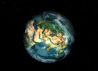
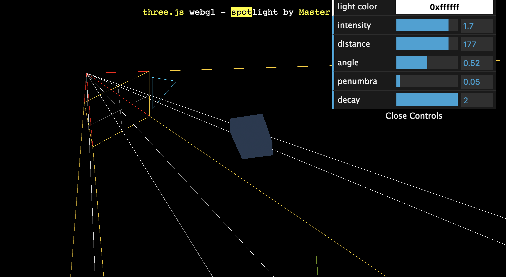

Demo效果展示 
另外一个效果超级赞的绘制有全球石油进出口情况的地球如下：
全球石油进出口可视化地球效果
准备工作 首先，需要准备很多张图片，用于绘制地球表面。这里用到的有地表图片和大气层图片。
color map 是由原作者综合了原始地球地图，美国地质调查局DEM信息的梯度映射，手绘图，球体深度信息和美国地质调查局海洋剪辑合成的，所以准确度比较高。 现在只能拿到1k的小图，绘制效果不好，如果要拿到更清晰的图片，可以付费下载，最大可以有10K。 这里另外找了一张3000*2000左右像素的color map，效果稍好一点。
bump map 用于绘制地球凹凸不平的表面特征，作者通过美国地质调查局DEM数据库拼凑而成。 图片只包含了陆地的海拔高度，海平面为0。最高点珠峰高度为255。如果需要生成超仿真3D地球，请可以付费下载10K版本。
specular map则用于绘制海洋表面的高光和反射，因用图片后比较刺眼，这里先去掉了。
大气图片有两种，一个是colormap，一个是transparent map 表示透明度
图片准备好了，接下来就可以慢慢把图片一层一层贴上去了
绘制过程 1. 初始化场景/相机/渲染器 准备好基础必备工作,初始化背景设置为黑色就好了：
1 2 3 4 5 6 7 8 var camera = new THREE.PerspectiveCamera(45 , window .innerWidth / window .innerHeight, 1 , 500 );camera.position.set(0 , 0 , 100 ); camera.lookAt(0 , 0 , 0 ); var renderer = new THREE.WebGLRenderer();renderer.setSize(window .innerWidth, window .innerHeight); renderer.setClearColor('rgb(4,13,31)' , 0.8 ); document .body.appendChild(renderer.domElement);
2. 绘制星空背景 比较简单，材料选择普通BasicMaterial就好。
1 2 3 4 5 6 7 8 9 10 11 createStarfield () { var texture = THREE.ImageUtils.loadTexture(starfieldImg) var material = new THREE.MeshBasicMaterial({ map: texture, side: THREE.BackSide }) var geometry = new THREE.SphereGeometry(100 , 32 , 32 ) var mesh = new THREE.Mesh(geometry, material) return mesh }
3. 绘制地球球体 绘制球体前要保证图片已经加载完成了，TextureLoader是纹理加载器,用与把普通图片转为textture纹理类型。 TextureLoader构造函数的对象textureLoader的load方法是异步的，找了其他一些例子发现跑不起来看到一片黑色，是因为这个方法用了同步的写法，导致还没拿到图片就开始绘制了。使用load方法加载后，我们拿到的其实是Texture类型，也就是纹理贴图的类型，普通的图片是不能正常显示的额。
接下来要先初始化一个材料，MeshPhongMaterial是一个参数众多的接口，看文档真是晕死。好在大部分用缺省值就好了，这里用到的就是前面讲的colormap， bumpMap, bumpScale, specularMap, specular。 这样地球表面就贴好了。
贴完纹理一个地球的样子就出现了，但是地球会自转呀，还要加一个动画让地球转起来。鼠标拖动也加一下，可以像看地球仪一样查看每个大洲的样子了。
1 2 3 4 5 6 7 8 9 10 11 12 13 14 15 16 17 18 19 20 21 22 23 24 25 26 27 28 29 30 31 32 33 34 35 36 37 38 39 40 41 42 43 44 45 function load ( textureLoader.load(imgList[loadCount], function ( texture ) loadCount++ textureResult.push(texture) if (loadCount < 5 ) load() else { var meshMaterial = new THREE.MeshPhongMaterial({ map: textureResult[0 ], bumpMap: textureResult[1 ], bumpScale: 1 , }); var sphereGeometry = new THREE.SphereGeometry(25 , 60 , 60 ); var sphere = new THREE.Mesh(sphereGeometry, meshMaterial); containerEarth.add(sphere); var atmosSphere = that.createEarthCloud(); containerEarth.add(atmosSphere); let orbitControls = new OrbitControls(camera, renderer.domElement); orbitControls.update(); var animate = function ( requestAnimationFrame(animate); sphere.rotation.y += 0.003 ; atmosSphere.rotation.x += 0.002 ; atmosSphere.rotation.y += 0.003 ; orbitControls.update(); renderer.render(scene, camera); }; animate() } }) } load()
4. 绘制大气层 接下来绘制大气层，绘制出的效果很通透，然鹅过程很复杂。 表示透明图的图片是黑白的，显然不可以直接用，那只能把原色彩图与透明度图合成起来。 合成方法需要用到canvas来做，这里过程还是蛮有趣的。
首先创建一个存放最后结果的canvas上下文，合成的data会放到这里。然后分别创建颜色值canvas和透明度值canvas，加载后的图片Image数据分别绘制到相应canvas上。 接下来开始合成带有透明度的结果canvas：
遍历每个canvas像素点，每个像素点包含四个值，具体可以查看MDN文档：
ImageData 对象
imageData的数据data实际是一个Uint8ClampedArray类型的一维数组，包含着RGBA格式的整型数据，范围在0至255之间。
将每个像素的原有color的rgb值分别赋值给结果像素点， 最后的a值代表透明度，255为不透明，减去透明度值canvas对应的像素值就得到了最终每个像素点的透明度。
1 2 3 4 5 6 7 8 9 10 11 12 13 14 15 16 17 18 19 20 21 22 23 24 25 26 27 28 29 30 31 32 33 34 35 36 37 38 39 40 var canvasResult = document .createElement('canvas' )canvasResult.width = 1024 canvasResult.height = 512 var contextResult = canvasResult.getContext('2d' )var imageMap = new Image();imageMap.addEventListener("load" , function ( var canvasMap = document .createElement('canvas' ) canvasMap.width = imageMap.width canvasMap.height = imageMap.height var contextMap = canvasMap.getContext('2d' ) contextMap.drawImage(imageMap, 0 , 0 ) var dataMap = contextMap.getImageData(0 , 0 , canvasMap.width, canvasMap.height) var imageTrans = new Image(); imageTrans.addEventListener("load" , function ( var canvasTrans = document .createElement('canvas' ) canvasTrans.width = imageTrans.width canvasTrans.height = imageTrans.height var contextTrans = canvasTrans.getContext('2d' ) contextTrans.drawImage(imageTrans, 0 , 0 ) var dataTrans = contextTrans.getImageData(0 , 0 , canvasTrans.width, canvasTrans .height)]] var dataResult = contextMap.createImageData(canvasMap.width, canvasMap.height) for (var y = 0 , offset = 0 ; y < imageMap.height; y++) { for (var x = 0 ; x < imageMap.width; x++, offset += 4 ) { dataResult.data[offset + 0 ] = dataMap.data[offset + 0 ] dataResult.data[offset + 1 ] = dataMap.data[offset + 1 ] dataResult.data[offset + 2 ] = dataMap.data[offset + 2 ] dataResult.data[offset + 3 ] = 255 - dataTrans.data[offset + 0 ] } } contextResult.putImageData(dataResult, 0 , 0 ) material.map.needsUpdate = true ; }) imageTrans.src = atmosTransMapImg; }, false ); imageMap.src = atmosMapImg;
5. 添加灯光效果 好不容易绘制了地球，然鹅一片漆黑看不见。上帝说，要有光，加了聚光灯，于是我们可以看见美丽的地球了。之前效果一直不出来，发现绘制地球时选择的材料是MeshPhongMaterial，这种材料属于反射型材料，必须通过光照才能看到，否则为黑色。
聚光灯官方文档示例：

直加聚光灯，有一半会像真实的地球一样淹没在黑暗里，但我们像看到全部的面貌，所以添加了AmbientLight均匀照亮场景中的所有物体。
1 2 3 4 5 6 7 8 9 10 11 var spotLight = new THREE.SpotLight(0xffffff , 1.5 , 0 , Math .PI / 2 , 0 , 2 );spotLight.position.set(40 , 40 , 100 ); spotLight.castShadow = true ; scene.add(spotLight); var light = new THREE.AmbientLight(0x222222 )scene.add(light) var light = new THREE.DirectionalLight(0xffffff , 1 )light.position.set(5 , 5 , 5 )
这样，一个带有大气层可以自转的地球就绘制好了。